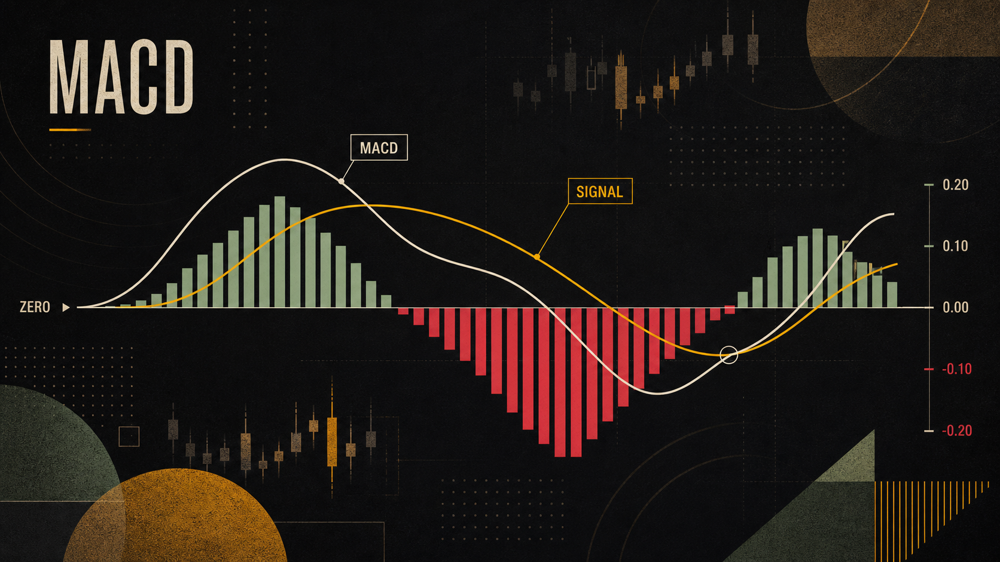
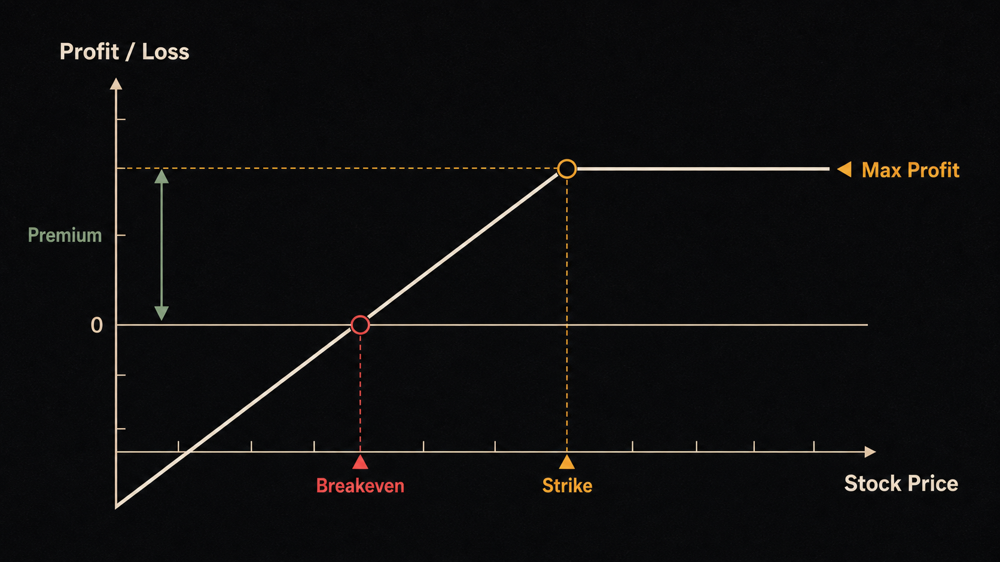
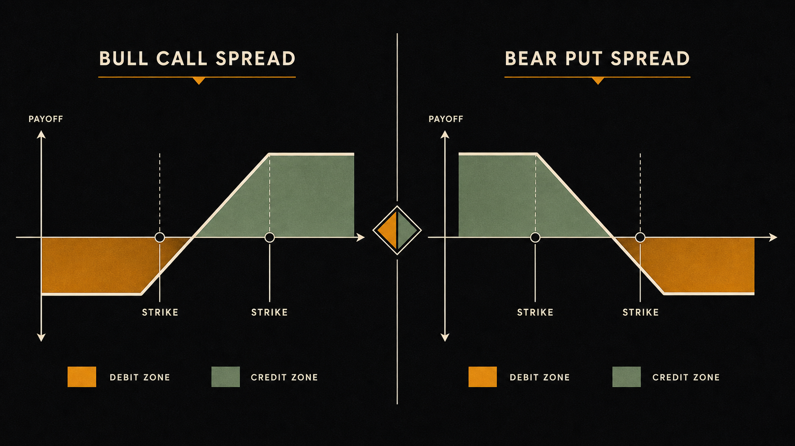

大多数人觉得期权等于赌博。但华尔街最赚钱的期权玩家，往往是卖期权的那一方——他们的思维更像保险公司，而不是赌徒。理解这一点，才是真正进入期权策略世界的钥匙。
策略不是投机——保险公司的思维
上一章我们讲了期权的基本原理：Call 给你买入权，Put 给你卖出权，买方付权利金，卖方收权利金。现在，我们要换一个视角来理解整个期权市场。
问你一个问题：每年保险公司到底赚不赚钱？
答案是：长期稳定地赚。原因很简单——他们收取大量小额保费，偶尔赔付一次大额理赔，但统计上总保费收入远超赔付支出。他们不需要猜测哪一天会发生车祸，他们只需要对赔付概率定价合理就行。
期权卖方的逻辑与此完全相同。当你卖出一份期权，你就是那家保险公司：买方付给你权利金，你承担义务。如果期权到期作废（买方白付了保费），权利金就是你的纯利润。
当然，卖期权不是没有风险——一旦行情剧烈反转，亏损可能很大（裸卖Call理论上亏损无限）。所以专业卖方策略的核心是：用其他腿来限制风险。这就是本章要讲的"组合策略"。
买期权是买彩票，卖期权是开彩票店。
— 华尔街期权交易员常言以下六种策略，是散户和专业投资者使用频率最高的。它们从保守到激进，从方向性押注到中性收益，覆盖了不同市场环境下的需求。

备兑买权（Covered Call）：让股票「打工」
备兑买权（Covered Call）是最适合长期持股者的期权策略，也是入门卖方策略的最佳起点。逻辑简单：你已经持有股票，在此基础上卖出一个虚值 Call（Out-of-the-Money Call），收取权利金作为额外收入。
构建方式
- 腿一：持有 100 股（或其倍数）标的股票
- 腿二：卖出 1 份同等数量的 OTM Call 期权
- 净效果：立即收到权利金，对应卖出了一份"股价上涨潜力"
具体案例：AAPL 备兑买权
假设你持有 100 股苹果（AAPL），当前股价 $300。你判断未来 30 天 AAPL 不会大幅上涨，于是：
三种到期情景
| 情景 | AAPL 到期价格 | 你的结果 |
|---|---|---|
| 股价未涨过执行价 | $300 或以下（含跌破） | Call 到期作废，$400 权利金 100% 归你，股票继续持有。但若股票下跌，股票亏损由权利金部分对冲。 |
| 股价涨到执行价附近 | $305 ~ $315 | Call 仍作废（未超过 $315），你保留 $400 权利金，同时股票获得 $500–$1,500 浮盈。 |
| 股价涨过执行价 | $320 或以上 | Call 被行权，你必须以 $315 卖出 100 股。总收益 = $(315–300)×100 + $400 = $1,900。上涨超过 $315 的部分利润被买方赚走。 |
适合谁？
备兑买权最适合以下情况：你是 AAPL 的长期持有者，认为未来一个月不会大幅上涨；你想在震荡或缓涨市场中持续产生现金流；你不介意股票在强烈上涨时被"强制卖出"（因为你无论如何都是盈利的）。

现金担保卖权（Cash-Secured Put）：等低买
现金担保卖权（Cash-Secured Put，简称 CSP）是备兑买权的"镜像"策略。你手里没有股票，但想低价买入某只你看好的股票。与其直接挂限价单等待，不如卖出一个 OTM Put——如果股票跌到你想买的价格，你被迫买入（这正是你想要的）；如果没跌到，你白赚了一笔权利金。
我用 Cash-Secured Put 来「领薪水等机会」——要么以理想价格买到股票，要么收到权利金再等。两种结果我都能接受。
— 常见于专业价值投资者的表述具体案例：用 CSP 低价买入 AAPL
AAPL 当前价格 $300。你认为 $290 是理想买入价。你的操作：
- 卖出 1 份 AAPL $290 Put，30 天到期，收到权利金 $3.00/股（共 $300）
- 账户里需锁定 $29,000 现金作为担保（如果被行权，你要以 $290 买入 100 股）
| 情景 | 到期价格 | 结果 |
|---|---|---|
| 股价未跌到 $290 | $290 以上 | Put 作废，$300 权利金归你。等一个月，没买到股票，但也不是空手而归。 |
| 股价跌到 $290 以下 | $290 以下 | Put 被行权，你以 $290 买入 100 股 AAPL。实际成本 = $290 − $3.00 = $287 有效买入成本，比你直接挂单还便宜。 |
这就是"领薪水等机会"的含义：你设定了一个愿意买入的价格，同时无论如何都能收到权利金。唯一的真实风险是：股票跌得远比你预期的多（比如暴跌到 $240），此时你以 $287 的有效成本持有，仍面临巨大浮亏。
价差策略（Spread）：限定风险的方向性押注
价差策略（Spread）解决了买期权的一个核心问题：权利金太贵，时间价值每天都在流失。解决方案是同时买入和卖出不同执行价的期权，用卖出的权利金部分抵消买入成本——代价是封住了上方（或下方）的无限利润空间。
牛市看涨价差（Bull Call Spread）
适用场景：你看涨某股票，但想降低购买 Call 的成本，同时接受利润上限。
构建方式：
- 买入：较低执行价的 Call（花钱，获得上涨权利）
- 卖出：较高执行价的 Call（收钱，放弃更高位置的上涨权利）
- 净成本：买入成本 − 卖出权利金 = 净权利金支出（Net Debit）
案例：AAPL 牛市看涨价差
AAPL 当前 $300，你认为 30 天内会涨到 $315：
最大利润 = 两个执行价之差（$15）− 净成本（$3.00）= $12.00/股，发生在 AAPL 到期时 ≥ $315 的情况下。
最大亏损 = 净成本 $3.00/股 = $300，发生在 AAPL 到期时 ≤ $300 的情况下（两腿全部作废）。
盈亏平衡点 = 低执行价 + 净成本 = $300 + $3.00 = $303.00。
熊市看跌价差（Bear Put Spread）
做多看涨价差的镜像——你看跌某股票，买入较高执行价的 Put，卖出较低执行价的 Put。逻辑相同：降低成本，限制利润上限。

铁鹰（Iron Condor）：震荡市的收割机
铁鹰（Iron Condor）是最经典的中性期权策略——你不押涨，不押跌，只押股票在一段时间内横盘。它由四条腿组成，同时卖出一个 Call 价差和一个 Put 价差，在两端建立"安全缓冲区"。
构建方式
- 卖出 OTM Call 价差：卖出较低执行价 Call + 买入更高执行价 Call（限制上行风险）
- 卖出 OTM Put 价差：卖出较高执行价 Put + 买入更低执行价 Put（限制下行风险）
- 净效果：收取两个价差的总权利金，在中间区间内盈利
案例：AAPL 铁鹰
AAPL 当前 $300，你判断 30 天内不会大幅波动（维持在 $280–$320 区间）。
| 操作 | 执行价 | 权利金 |
|---|---|---|
| 卖出 OTM Call | $315 | +$1.50 |
| 买入 OTM Call（保护） | $320 | −$0.70 |
| 卖出 OTM Put | $285 | +$1.50 |
| 买入 OTM Put（保护） | $280 | −$0.80 |
| 净收取权利金 | $2.50/股 = $250 | |
只要 AAPL 到期时收盘在 $285 ~ $315 之间，四条腿全部作废，你保留 $250 权利金，利润率 = 最大利润 / 最大风险。
铁鹰的最佳时机
铁鹰策略在隐含波动率（IV）高的时候最有价值。高 IV 意味着期权权利金被高估，你能收到更多的"保险费"。典型的入场时机：
- 财报公布后：财报前 IV 飙升，公布后 IV 暴跌（"IV Crush"），此时卖出价差可以快速盈利
- VIX 高位：大盘恐慌指数 VIX 超过 25–30 时，各股 IV 普遍偏高
- 股票在明显支撑位和阻力位之间：技术面支撑你对区间震荡的判断
跨式（Straddle）：押大波动，不押方向
跨式（Straddle）与铁鹰完全相反——你押注的不是"价格会稳定"，而是"价格会大幅波动，但我不知道方向"。最典型的使用场景：财报公布前夕。
跨式（Straddle）vs 勒式（Strangle）
| 策略 | 构建方式 | 特点 |
|---|---|---|
| 跨式 Straddle | 买入同一执行价（ATM）的 Call + Put | 成本较高，但盈亏平衡点更近，适合预期大幅波动 |
| 勒式 Strangle | 买入 OTM Call + OTM Put（不同执行价） | 成本较低，但需要更大的价格移动才能盈利 |
案例：AAPL 财报前跨式
AAPL 股价 $300，距离财报公布还有 3 天。历史上 AAPL 财报日当天平均波动 ±5%。你构建跨式：
- 买入 $300 Call，权利金 $6.00/股
- 买入 $300 Put，权利金 $5.70/股
- 总成本 = $11.70/股 = $1,170
盈亏平衡：股价需要涨超 $311.70 或跌破 $288.30 才开始盈利。如果 AAPL 财报后暴涨 8%（涨到 $324.00）：
Call 价值 ≈ $24.00，Put 价值 ≈ 0，总盈利 = $24.00 − $11.70 = $12.30/股 = $1,230，回报率约 105%。
致命陷阱：IV Crush（隐含波动率崩塌）
这是跨式策略最大的风险，初学者必须理解。
财报前，期权 IV 非常高（因为大家都在为"不确定性"付溢价）。财报公布后，不确定性消除，IV 瞬间崩塌——即使股价确实大幅波动，期权的时间价值损耗可能吃掉大部分方向盈利。
- 卖方思维 = 保险公司思维：收取权利金，押注期权到期作废（统计上约 70–80% 的期权确实作废）。
- 备兑买权（Covered Call）：持有股票 + 卖出 OTM Call，收取权利金，上方利润封顶，用于长期持股增收。
- 现金担保卖权（CSP）：卖出 OTM Put，"领薪水等低价买股"，被行权时以理想价格接货。
- 牛市看涨价差：买低执行价 Call + 卖高执行价 Call，降低成本，限定最大亏损。
- 铁鹰（Iron Condor）：同时卖出 Call 价差和 Put 价差，在区间内收权利金，最佳时机是高 IV 环境。
- 跨式（Straddle）：买入同执行价的 Call + Put，押大波动不押方向，但当心财报后 IV Crush 吞噬利润。
| 中文 | 英文 | 一句话解释 |
|---|---|---|
| 备兑买权 | Covered Call | 持有股票的同时卖出 Call，收取权利金，锁定最高卖出价 |
| 现金担保卖权 | Cash-Secured Put | 账户备足现金，卖出 Put，以理想价格等待买入机会 |
| 价差 | Spread | 同时买卖不同执行价的同类期权，限定最大盈亏区间 |
| 铁鹰 | Iron Condor | 同时卖出 Call 价差和 Put 价差，在区间内盈利的中性策略 |
| 跨式 | Straddle | 买入同执行价的 Call + Put，押大波动，方向不限 |
| 卖权 | Put Option | 赋予持有人以执行价卖出标的的权利 |
| 权利金 | Premium | 购买期权所支付（或卖出期权所收取）的价格 |
| 到期 | Expiration | 期权合约生效的最后日期，之后期权作废或被行权 |
| IV Crush | IV Crush | 重大事件（如财报）公布后隐含波动率骤降，期权价值大幅缩水 |
| 虚值期权 | Out-of-the-Money (OTM) | 当前股价未达执行价（Call）或未跌破执行价（Put）的期权 |
你以 $300 买入 100 股 AAPL，随后卖出 $315 Call 收到 $4.00 权利金（共 $400）。到期时 AAPL 涨到 $330，备兑买权策略的最大利润是多少？
铁鹰（Iron Condor）策略最适合哪种市场环境？
构建 AAPL 牛市看涨价差：买入 $300 Call 花 $5.00，卖出 $315 Call 收 $2.00。若到期时 AAPL 跌到 $295，最大亏损是多少？